55:31 · 23 OPERE
Come accostarsi alla lettura di un libro?
Il filo del discorso
Come si entra davvero in un libro? Una domanda dei commenti conduce Caldarella a proporre alcune ipotesi di lettura, senza presentarle come un metodo unico o una teoria esaustiva. Il percorso comincia dalla passione di Borges per le biblioteche e dalla Antologia della letteratura fantastica curata con Silvina Ocampo e Adolfo Bioy Casares. La brevità dei racconti è suggerita come una possibile soglia di ingresso. Proust e Conan Doyle mostrano altri modi di vivere fra i libri: una presenza che accompagna la memoria, apre connessioni e rende disponibili pensieri di persone lontane nel tempo. La proposta prende forma attraverso cinque nuclei, la cui enumerazione nel parlato non è del tutto rigida: lingua, contesto, semantica e psicologia, traduzione emotiva, codice culturale. La lingua non riguarda soltanto la traduzione fra idiomi: nomi, allusioni e giochi di parole chiedono attenzione. Il contesto impedisce di giudicare un testo come se fosse stato scritto oggi e per il nostro pubblico. Gli esempi di Bulgakov, Hesse e della Bibbia mostrano ciò che una lettura frettolosa può perdere. La scheda segnala anche i limiti di alcuni esempi: Begemot è il gatto del romanzo, pur avendo un nome che significa ippopotamo in russo; le ricostruzioni di antichi culti materni restano ipotesi interpretative del relatore. Un libro passa poi attraverso il vissuto di chi lo apre. Una caratteristica di un personaggio può richiamare una persona amata; una opera consigliata con entusiasmo può lasciare indifferente un altro lettore. Questa traduzione emotiva coinvolge anche le letture precedenti. Caldarella usa Tolkien e Marion Zimmer Bradley per motivare un giudizio molto severo sulla narrativa seriale contemporanea, in particolare Harry Potter e Dan Brown. Sono valutazioni letterarie del relatore: la scheda non le converte in una graduatoria oggettiva, in una accusa provata di plagio o in una esclusione generale del valore della lettura di intrattenimento. Il percorso è attraversato da digressioni su Eco, Zolla, il ruolo degli editori e la democrazia, con i richiami a von Arnim e al Diario di lavoro di Brecht. Il loro filo comune è il rapporto fra cultura e autonomia, anche quando le accuse politiche richiedono riscontri ulteriori. Nel finale il codice culturale diventa la rete di immagini, archetipi e tradizioni che rende accessibile un testo: gli haiku o un poema di una altra cultura possono chiedere al lettore di imparare nuovi riferimenti. Frye aiuta a pensare la funzione della Bibbia nella letteratura occidentale. La conclusione invita a trattare il libro come un interlocutore: un pensiero che la lettura può riattivare, mettendo in gioco la propria esperienza e la disponibilità a essere trasformati.
I libri nel discorso
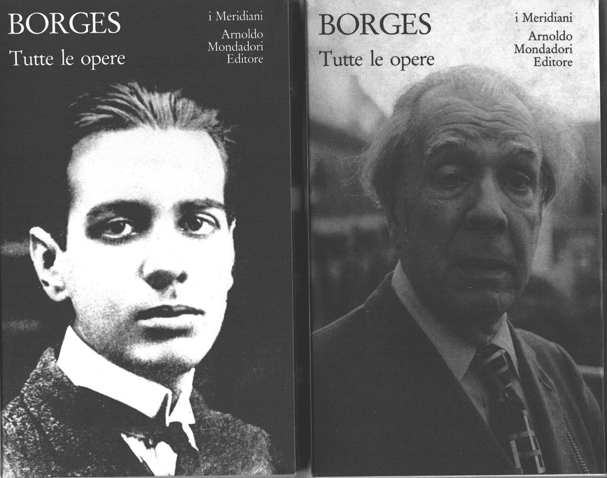
Tutte le opere · volumi I e II
Identificazione probabile
Foto dei due volumi · Meridiani Collezione, 2005: Mondadori, I Meridiani, due volumi originari del 1984 e 1985, a cura di Domenico Porzio. Foto dei due volumi della serie I Meridiani Collezione, numeri 17 e 18, 2005; non prima edizione degli anni Ottanta.
Due copertine della stessa raccolta in una fotografia originale del venditore, non una immagine composita creata per il sito. Ristampa 2005 distinta dalla edizione 1984–1985; tiratura del video non verificata.
Opera di Borges in due volumi esplicita; identificazione probabile nella raccolta curata da Porzio, senza certezza della tiratura del video.
Passaggio 4:56 ↗ · Fonti e libro ↗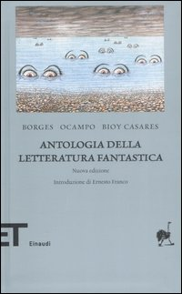
Antologia della letteratura fantastica
Copertina: Einaudi, nuova edizione 2007, introduzione di Ernesto Franco, ET. Scrittori 34. Il catalogo SDIMM descrive XXX, 537 pagine; LibroCo indica XXX–538. Copertina della raccolta, non dei singoli racconti. Precedente edizione italiana Editori Riuniti, 1981, distinta.
Immagine autentica dell’opera, controllata visivamente; l’edizione di riferimento non è attribuita al filmato.
Antologia della letteratura fantastica, curata da Borges, Silvina Ocampo e Adolfo Bioy Casares: titolo e curatori nominati.
Passaggio 6:25 ↗ · Fonti e libro ↗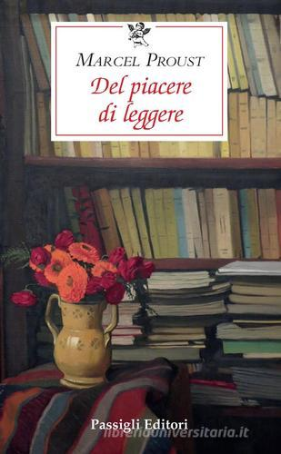
Del piacere di leggere / Sur la lecture
Copertina: Passigli, Le Occasioni, edizione ampliata 2020, 96 pagine, traduzione di Maria Cristina Marinelli; Maria Elisa Della Casa nella cura della edizione. Sur la lecture apparve nel 1905 e divenne nel 1906 prefazione alla traduzione proustiana di Sésame et les lys di Ruskin. La edizione 2020 aggiunge il saggio-prefazione per Morand del 1920.
Copertina della edizione ampliata Passigli 2020. Il catalogo Passigli 2010 attesta già una edizione di 62 pagine, codice 0446-7; non si attribuiscono automaticamente al volume del video i materiali aggiuntivi del 2020.
Titolo reso con esitazione e editore Passigli espliciti; prefazione a Ruskin riconoscibile nel saggio Sur la lecture.
Passaggio 8:16 ↗ · Fonti e libro ↗
Discorso sul metodo
Identificazione probabile
Copertina: Laterza · Economica 127 · opera in collana dal 1998, ristampa 2025 · traduzione di Maria Garin
Immagine autentica dell’opera, controllata visivamente; l’edizione di riferimento non è attribuita al filmato.
Massima di Descartes sulla lettura come conversazione con gli autori: riconoscibile nella prima parte del Discorso, titolo non pronunciato in questo passaggio.
Passaggio 10:15 ↗ · Fonti e libro ↗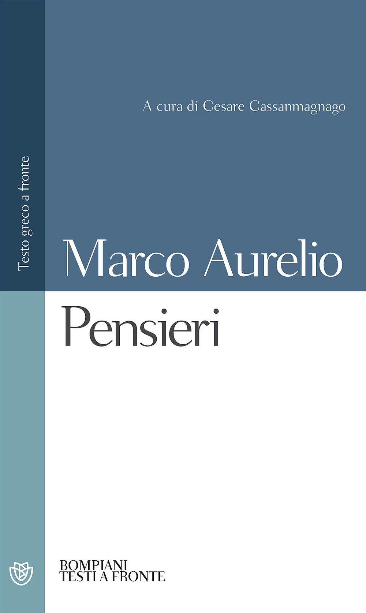
Ricordi (Meditazioni; Pensieri; Colloqui con se stesso)
Copertina di Pensieri, Bompiani 2008: stessa opera citata come Ricordi; edizione non identificata nel video.: Bompiani, Pensieri, a cura di Cesare Cassanmagnago, testo greco a fronte, aprile 2008, ISBN 9788845260612
Copertina della stessa opera sotto il titolo italiano Pensieri; non edizione certificata nel filmato. La pagina editoriale indica 576 pagine e brossura con bandelle. Cassanmagnago è curatore moderno, non coautore antico. Non è una copertina di una raccolta di opere diverse o di un’antologia di brani.
Nei segmenti 74–75 della fonte locale, da 640.20 a 651.16 s, il relatore dice «i ricordi di Marco Aurelio» discutendo il libro dell’imperatore disponibile sullo scaffale senza un’udienza. Titolo e autore espliciti; nessun editore o traduttore pronunciato.
Passaggio 10:40 ↗ · Fonti e libro ↗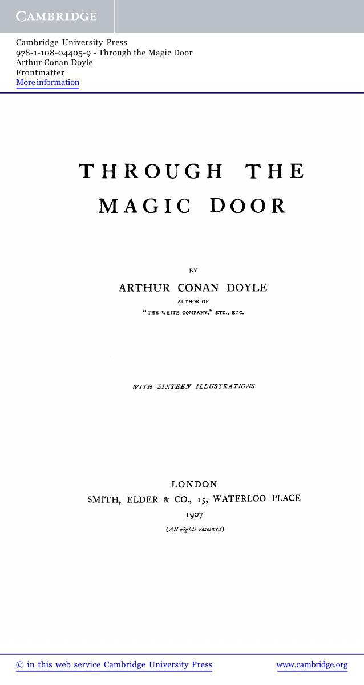
Through the Magic Door
Frontespizio originale 1907 · riproduzione Cambridge 2012: London, Smith, Elder & Co., 1907, con sedici illustrazioni. Immagine del frontespizio originale nella riproduzione Cambridge Library Collection 2012, ISBN 9781108044059: pagina 7 del PDF pubblico, non copertina commerciale.
Pagina intera 7 dell’estratto Cambridge, rasterizzata senza ritagli: editore Smith, Elder & Co., Londra, 1907, con intestazione e crediti Cambridge mantenuti. Dichiarata la riproduzione digitale del 2012; non copertina della prima edizione.
Arthur Conan Doyle e Through the Magic Door espliciti, senza confondere opera e personaggio Sherlock Holmes.
Passaggio 11:05 ↗ · Fonti e libro ↗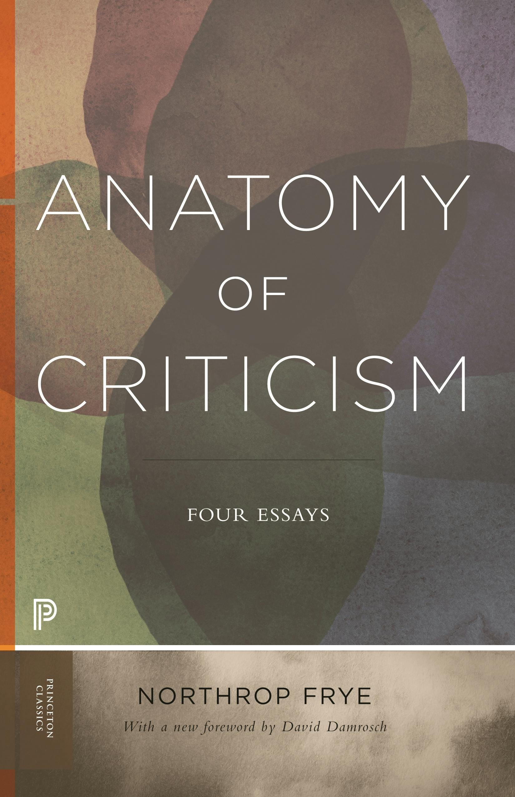
Anatomia della critica / Anatomy of Criticism: Four Essays
Copertina ufficiale inglese · Princeton Classics, 2020: Opera originale 1957. Traduzione italiana Einaudi, Paola Rosa-Clot e Sandro Stratta, 1969, 484 pagine. Copertina ufficiale inglese Princeton Classics, 2020, con nuova prefazione di David Damrosch; ISBN 9780691202563, non la edizione Einaudi citata.
Copertina da servizio pubblico di immagini Princeton, riscontrata sul titolo e sulla prefazione di Damrosch. Non è la edizione italiana del video. La scheda testuale Princeton è indicizzata ma la apertura diretta è impedita da robots; non è dichiarata la lettura del libro.
Anatomia della critica e Einaudi espliciti, Northrop Frye corretto dalla fonte automatica.
Passaggio 11:48 ↗ · Fonti e libro ↗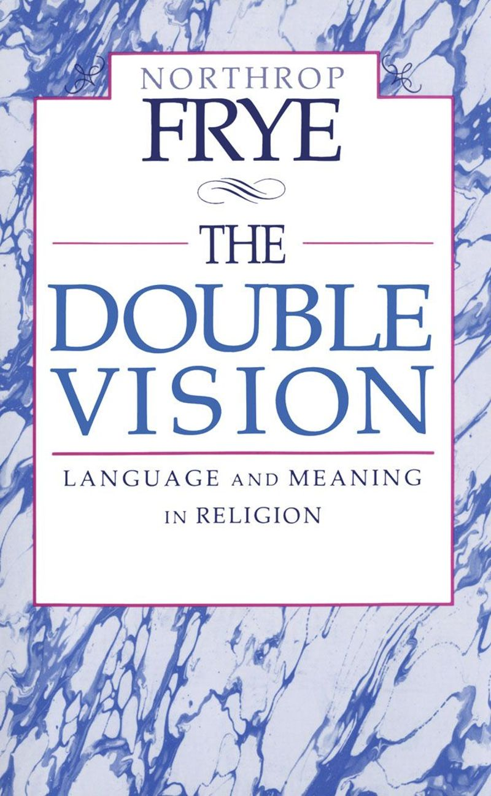
La duplice visione. Linguaggio e significato nella religione / The Double Vision
Copertina: University of Toronto Press · edizione inglese · copyright1991 · immagine associata all’eBookISBN9781442681132
Copertina autentica dal catalogo dell’editore per l’opera originale inglese, distinta dalla traduzione Marsilio1993 menzionata nel video. Non presentata come copertina italiana né come copia specifica del relatore.
Titolo La duplice visione e Marsilio espliciti nei segmenti87–88. Riscontro bibliografico dell’originale inglese1991 e della traduzione1993; immagine autentica dell’edizione inglese dichiarata.
Passaggio 11:55 ↗ · Fonti e libro ↗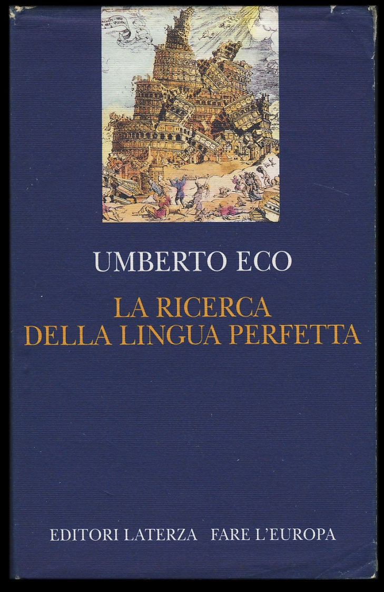
La ricerca della lingua perfetta nella cultura europea
Copertina: Laterza, Fare l’Europa, prima edizione 1993, VIII, 423 pagine, ISBN 8842042870; fotografia della sovraccoperta blu con torre di Babele. Edizione Economica Laterza 1996, ristampa 2017, 432 pagine e ISBN 9788842050285 distinta.
Copertina della edizione Laterza 1993, con titolo abbreviato La ricerca della lingua perfetta. Non attribuita con certezza al volume cercato dal relatore e non confusa con la lezione inaugurale breve del Collège de France.
Umberto Eco e La ricerca della lingua perfetta espliciti; riscontro con il saggio Laterza.
Passaggio 12:24 ↗ · Fonti e libro ↗
Apocalittici e integrati
Copertina: La nave di Teseo, I delfini, 2025; opera originariamente pubblicata nel 1964.
Immagine autentica dell’opera, controllata visivamente; l’edizione di riferimento non è attribuita al filmato.
Apocalittici e integrati esplicito e oggetto di una valutazione negativa del relatore.
Passaggio 13:30 ↗ · Fonti e libro ↗Staat ohne Diener. Was schert die Politiker das Wohl des Volkes?
Copertina: Kindler, München, 1993, 399 pagine nella bibliografia dell’autore, ISBN 3463402246. La scheda del venditore indica invece 288 pagine: dato discordante non usato come descrizione certa. Copertina Kindler riscontrata; tascabile aggiornato Knaur 1995, 410 pagine e ISBN 3426800624 distinto.
Immagine autentica dell’opera, controllata visivamente; l’edizione di riferimento non è attribuita al filmato.
Hans Herbert von Arnim, titolo italiano descrittivo Stato senza servitori: originale Staat ohne Diener, 1993 e non1992.
Passaggio 21:13 ↗ · Fonti e libro ↗
Diario di lavoro / Arbeitsjournal · due volumi
Foto originale · copertina del volume II e dorso del volume I: Einaudi, Gli struzzi 85, 1976: volume I, 1938–1942; volume II, 1942–1955, fino a pagina 1204. Foto originale con copertina del volume II e dorso del volume I, nella orientazione del sito di provenienza; non copertina separata del volume I.
Fotografia dei due volumi del Diario di lavoro Einaudi 1976, provenienza dichiarata. Il testo visibile del secondo volume reca 1942–1955, il primo è mostrato di dorso. Non si afferma di avere individuato in questa foto il passo del 1942 citato nel video.
Brecht, Diario di lavoro, due volumi Einaudi: riferimento esplicito, aneddoto del1942 non collazionato su pagina precisa.
Passaggio 22:54 ↗ · Fonti e libro ↗
Il maestro e Margherita
Copertina: BUR / Rizzoli · 2018
Immagine autentica dell’opera, controllata visivamente; l’edizione di riferimento non è attribuita al filmato.
Il maestro e Margherita di Bulgakov, nome Begemot e problema della traduzione espliciti.
Passaggio 29:51 ↗ · Fonti e libro ↗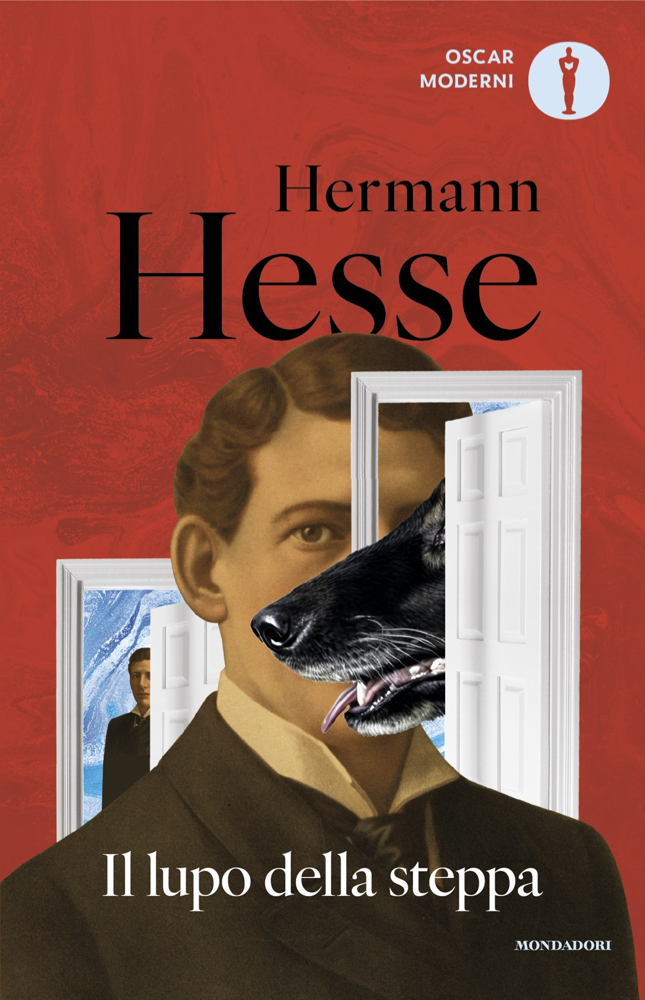
Il lupo della steppa
Copertina: Mondadori · Oscar Moderni · 2024
Copertina autentica controllata visivamente. Edizione di riferimento, non identificata come quella usata nel video.
Il lupo della steppa, Hermann Hesse e Harry Haller espliciti.
Passaggio 31:15 ↗ · Fonti e libro ↗
Bibbia
Copertina: San Paolo, 2014 · Nuova Versione dai Testi Antichi · edizione di riferimento
Bibbia ripresa per lingua, contesto e interpretazione; esempi di Gesù nel deserto, Mosè e creazione.
Passaggio 32:34 ↗ · Fonti e libro ↗
Lo Hobbit
Copertina: Bompiani, Pantheon, 2026; traduzione Wu Ming 4, illustrazioni Alan Lee
Copertina dell’edizione Bompiani di Lo Hobbit illustrata da Alan Lee. Edizione scelta come riferimento iconografico; nessuna edizione è confermata nel video.
Lo Hobbit e Tolkien espliciti come termini di confronto della esperienza di lettura.
Passaggio 47:42 ↗ · Fonti e libro ↗
Il Signore degli Anelli
Copertina: Bompiani, 2020 · edizione illustrata da Alan Lee
Edizione illustrata da Alan Lee, traduzione di Ottavio Fatica. Nessuna edizione attribuita al video.
Il Signore degli Anelli esplicito, senza assimilarlo a un singolo volume della serie di Harry Potter.
Passaggio 47:42 ↗ · Fonti e libro ↗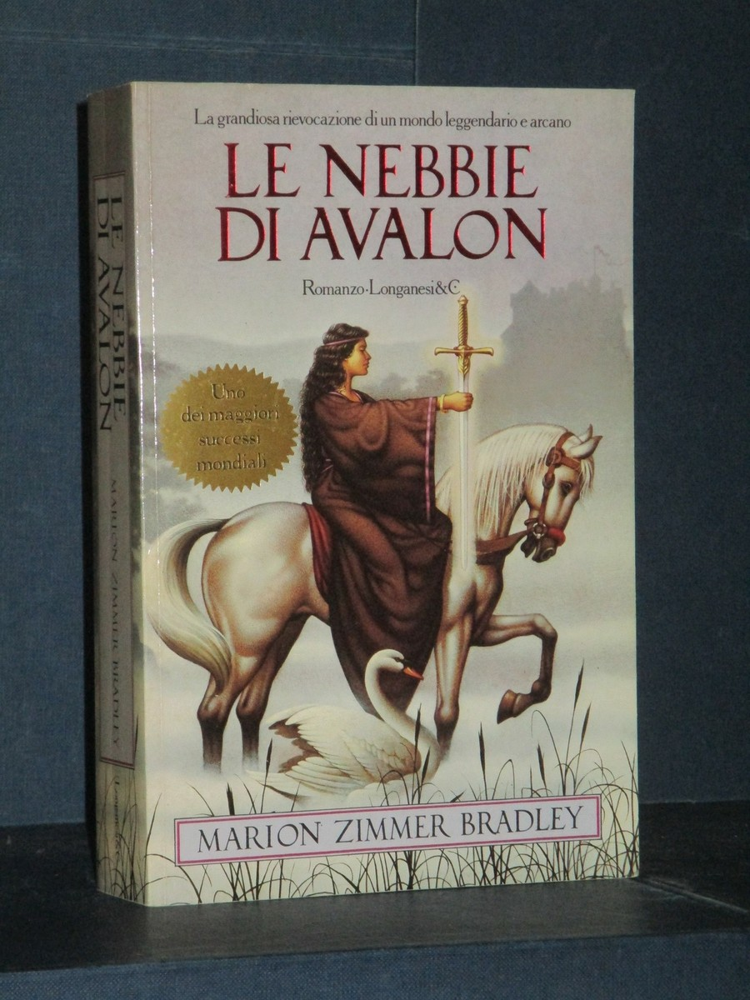
Le nebbie di Avalon / The Mists of Avalon
Copertina: Edizione italiana Longanesi, La Gaja Scienza 178, 1986, traduzione di Roberta Rambelli, ISBN 8830406821. Il catalogo della Braidense descrive 654 pagine e altri cataloghi 656–658. Foto di una copertina Longanesi: la specifica ristampa non è determinata dalla sola fotografia e non viene attribuita al filmato.
Copertina Longanesi autentica con titolo e autrice, distinta da successive traduzioni e dalla suddivisione HarperCollins in due parti. La tiratura fotografata non è certificata come prima edizione né come copia del video.
Marion Zimmer Bradley e Le nebbie di Avalon riconoscibili, non un titolo generico del ciclo di Avalon.
Passaggio 47:53 ↗ · Fonti e libro ↗
I promessi sposi
Copertina: BUR · 1998 · introduzione di Guido Bezzola
Immagine autentica dell’opera, controllata visivamente; l’edizione di riferimento non è attribuita al filmato.
Incipit del ramo del lago di Como riconoscibile, benché la fonte automatica lo deformi.
Passaggio 49:00 ↗ · Fonti e libro ↗
L’infinito
Copertina dei Canti che comprendono L’infinito: Feltrinelli, Universale Economica I Classici, 2016 · Canti
Copertina autentica dei Canti di Giacomo Leopardi, Feltrinelli 2016 a cura di Ugo Dotti, già verificata nel repertorio. La voce riguarda la singola poesia L’infinito; l’immagine non rappresenta una sua pubblicazione autonoma né l’edizione citata nel video.
Incipit di L’infinito riconoscibile nella recitazione, fonte ASR deformata non riproposta come citazione esatta.
Passaggio 49:05 ↗ · Fonti e libro ↗
Divina Commedia
Copertina: Giunti Barbera · Passepartout, 2021 · edizione di riferimento
Incipit della Commedia riconoscibile, con errori ASR distinti dal testo poetico.
Passaggio 49:08 ↗ · Fonti e libro ↗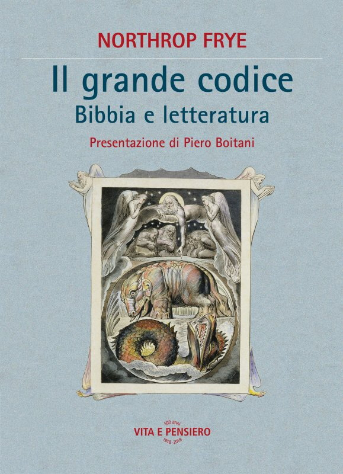
Il grande codice. Bibbia e letteratura / The Great Code
Copertina: Opera originale 1982; precedente traduzione italiana Einaudi 1986, Giovanni Rizzoni, VIII, 306 pagine. Copertina della edizione Vita e Pensiero 2018, presentazione di Piero Boitani, 319 pagine, ISBN 9788834332542; non la edizione del video.
Immagine autentica dell’opera, controllata visivamente; l’edizione di riferimento non è attribuita al filmato.
Frye, il grande codice della Bibbia e il rapporto con la letteratura: identificazione nel saggio The Great Code.
Passaggio 51:12 ↗ · Fonti e libro ↗
Don Chisciotte della Mancia
Copertina: Newton Compton · Vintage · edizione di riferimento
Don Chisciotte esplicito nel rapporto con modelli e categorie della letteratura.
Passaggio 52:20 ↗ · Fonti e libro ↗Minutaggi ricavati da testi automatici, da riascoltare. Le identificazioni probabili sono segnalate accanto ai libri.